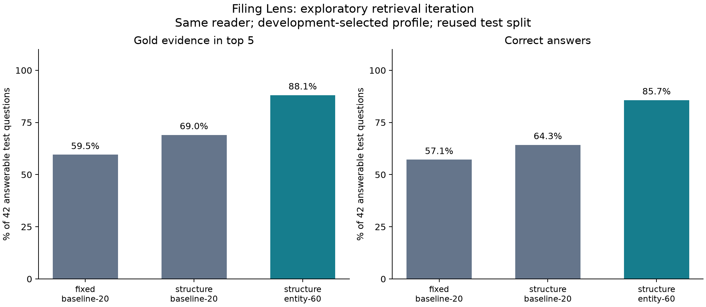

Research draft, 22 October 2026. Author list and affiliations pending review.
Financial question answering can return a source-supported statement that nevertheless answers the wrong question. We present Filing Lens, a CPU-local experimental system that separates candidate retrieval, passage ranking, answer extraction, and numeric evidence verification. The corpus contains 1,275 pages from 10 semiconductor issuers, with 80 AI-authored, source-anchored questions and company-disjoint development and test splits. An initial factorial experiment compares two chunkers, three retrieval methods, and optional cross-encoder reranking. A subsequent exploratory study freezes the reader while varying entity-scoped retrieval, candidate depth, lexical expansion, and hybrid search. Its development-selected configuration improves recall@5 from 59.5% to 88.1% and answer correctness from 57.1% to 85.7% on 42 answerable test questions. Candidate misses decrease from 16 to 2, while warm CPU p95 latency increases from 1.36 s to 3.25 s. We release per-question rankings, source spans, query plans, controls, and offline audits. These results are exploratory: the test split was previously inspected, labels lack independent human adjudication, and short paraphrases can still induce refusals. The contribution is an inspectable failure analysis and reproducible evaluation artifact, not a new retrieval model or evidence of production financial reliability.
A correct financial response requires more than locating a familiar number. The issuer, fiscal period, metric, sign, unit, and table column must all agree with the question. Consolidated statements can contain several years, losses in parentheses, company-specific units, and per-share rows with a different scale from nearby values. A fluent response and a real citation therefore provide incomplete evidence of question correctness.
Retrieval-augmented generation connects language generation to external evidence 1. Filing Lens studies the retrieval and verification stages using an extractive reader as its primary controlled endpoint. Separate local generation experiments remain available in the repository, but are not pooled with the retrieval results in this paper. Holding the reader fixed allows a change in answer behavior to be associated with the retrieved context, subject to the dataset and scoring limitations described below.
We ask three research questions. RQ1: where do failures occur between candidate generation, reranking, and answer extraction? RQ2: how do explicit issuer constraints and candidate depth affect source-span retrieval under a fixed reader budget? RQ3: what do numeric verification, refusal, and reproducibility controls establish, and what remains outside their guarantees?
The study contributes a source-anchored audit pipeline, a controlled comparison with stage-level failure attribution, and a reproducible artifact that retains unsuccessful outputs. Its strongest claim is local and empirical: many failures in this small corpus occur before the reranker sees the needed passage. We do not claim algorithmic novelty for metadata filtering or reranking, state-of-the-art financial QA, or independent confirmation of the exploratory improvement.
BM25 provides the lexical baseline 2. Sentence-BERT established a framework for efficient sentence embeddings 3, while BERT-based passage reranking scores query-passage pairs after an initial retrieval step 4. Reciprocal rank fusion combines ranked lists without requiring comparable raw scoring scales 5. Filing Lens uses existing implementations and pinned pretrained models; none of these methods is introduced or fine-tuned here.
FinQA emphasizes numerical reasoning over financial reports and includes expert-written questions and reasoning-program annotations 6. TAT-QA studies reasoning over hybrid table-and-text contexts in finance 7. Filing Lens addresses a narrower extraction problem but searches a corpus of complete reports and preserves retrieval-stage provenance. Its AI-authored questions, limited metric families, and strict canonical gold spans make direct leaderboard comparisons inappropriate. We have not run FinQA or TAT-QA as external validation, and do not imply that their results are comparable to ours.
This is a targeted set of methodological references, not an exhaustive novelty survey. A submission should extend the review to recent document retrieval and financial QA work after fixing its intended scope and venue. That literature review would not itself resolve the lack of independent labels or a new holdout.
The corpus contains one FY2023 report for each of NVIDIA, AMD, Intel, Qualcomm, Broadcom, Texas Instruments, Micron, Analog Devices, Microchip, and NXP. Full reports, including additional material present in downloaded PDFs, are searchable. The year is the issuer's fiscal year, not a uniform calendar interval. A requested earlier period can appear as a comparative column in the FY2023 filing.
Questions were AI-authored after inspecting source text and statements. Expected answers were recorded separately from chunk construction, then materialized as immutable document, page, and character-span anchors against the canonical extraction. No questions have yet received independent human adjudication. An existing small AI-assisted visual spot check is not treated as independent validation. Source hashes protect byte identity, not the correctness of a visual interpretation or annotation.
| Type | All | Dev | Test |
|---|---|---|---|
| Numeric | 50 | 15 | 35 |
| Narrative | 10 | 3 | 7 |
| Unanswerable | 20 | 6 | 14 |
| Total | 80 | 24 | 56 |
Table 1. Benchmark composition. Development uses NVIDIA, AMD, and Intel; the other seven issuers form test. Every report remains indexed in every split, so this is a split of questions by company, not a test on previously unseen documents.
The five repeated numeric families are revenue, net income, research and development, total assets, and diluted earnings per share. Narrative questions cover a small set of filing facts. Half of the negative questions request future periods and can be rejected from metadata; the remainder ask for absent metrics or unsupported granularity. These negatives do not establish robustness to subtle false premises. Canonical gold passages are not exhaustive: equivalent disclosures elsewhere in a report may yield correct answers without matching gold.
Source PDFs and model revisions are pinned by hashes. Page text and normalized statement tables share a canonical representation. Fixed chunks use 160-word windows with 32-word overlap. Structure-aware chunks preserve paragraph and table boundaries and repeat source headers when splitting long tables. Both receive the same company, ticker, and fiscal-year metadata prefix. Character offsets identify source spans even when headers are repeated.
These chunkers do not have identical token counts or storage cost. Table normalization, repeated headers, and enriched views can duplicate content, and neural token limits can truncate different amounts of text. The chunking comparison is therefore a practical representation comparison, not an isolated test of boundary selection with all other properties equal.
Lexical retrieval uses BM25. Dense retrieval uses normalized embeddings from sentence-transformers/all-MiniLM-L6-v2 and exact NumPy cosine search. Hybrid retrieval combines the lexical and dense lists with reciprocal rank fusion, using constant 60:
RRF(c) = sum over lists L containing c of 1 / (60 + rank_L(c)).
The cross-encoder is cross-encoder/ms-marco-MiniLM-L-6-v2, with a 384-token maximum input length. The reference candidate budget is 20. The follow-up separates a 20- or 60-candidate reranking budget from the final top 20 ranking and the reader's first five chunks. A reranker can change only the order of passages it receives; it cannot recover a passage absent from its candidate set. Ties are resolved deterministically.
Entity-aware retrieval matches company names, tickers, optional corpus aliases, and specific name shortenings derived from metadata. Short tickers require uppercase spelling. The filter is applied before lexical or dense candidate truncation. Multiple recognized issuers retain their union; no recognized issuer falls back to all documents. This is deterministic metadata routing, not a learned entity linker. The reader still refuses ambiguous entity requests.
We deliberately avoid filtering by the requested fiscal year, because a filing can contain comparative-period evidence. Scoped BM25 retains corpus-wide statistics and scores only eligible chunks. Dense retrieval scores the eligible embedding rows. An optional financial vocabulary expands lexical queries for the benchmark's five metric families. Dense encoding and reranking receive the original question. No gold labels or expected answers enter any of these retrieval operations.
The extractive reader resolves an issuer, period, and supported intent. A numeric response requires retrieved evidence for the relevant table header and row on the same PDF page. The follow-up enables same-page assembly from the first five chunks for every setting. Complete evidence is checked against the source cell using decimal arithmetic, including amount, sign, unit, entity, period, metric, and column. Missing or inconsistent evidence causes refusal. A separate surface check verifies that the rendered number agrees with the structured claim.
Narrative extraction uses a deliberately simple query-overlap heuristic. Its correctness is scored by an acceptable answer substring. This is not a semantic entailment judge. Source support is assessed separately from question correctness: a faithful source quotation can still be irrelevant. Numeric verification shares extraction machinery with the reader, so agreement between them cannot establish that the PDF was parsed correctly.
The original experiment evaluated 12 configurations: two chunkers, three retrieval methods, and reranking enabled or disabled. It fixed the original extractive reader, without the later same-page assembly improvement. Development selected fixed-bm25-rerank, whose test recall@5 was 59.5%. Its original-reader answer correctness was 42.9%. The 57.1% control in the present follow-up uses the same retrieval with table assembly enabled. These are different reader conditions and must not be conflated.
The follow-up evaluated six settings on the same 24 development questions. All used the same pinned cross-encoder, reader with assembly, and five-chunk reader budget. Selection maximized development recall@5, then MRR@20, then preferred a smaller candidate budget, then configuration name. Test evaluated only the chosen setting and the fixed- and structure-chunked controls. Lexical expansion and hybrid variants were not selected using test performance.
Implementation, input, model, and dependency fingerprints were recorded before inference. Test execution rejected changed development artifacts or implementation. This prevents changes between the two stages of this run; it does not erase prior exposure to the test questions. The entire follow-up is therefore reported as exploratory.
Recall@k is the proportion of annotated gold spans fully contained in the first k chunks, averaged over answerable questions. Each answerable question has one gold span here, so this is also a hit rate. MRR@20 is reciprocal rank of the first matching passage, or zero when absent. Candidate recall applies the same containment rule before reranking.
A candidate miss means gold is absent from the candidate set. A ranking miss means it is available to the reranker but absent from the first five results. These are passage-level diagnostics, not exhaustive explanations of answer correctness. A reader failure can occur after a hit, and an alternative disclosure can support an answer after a canonical-gold miss.
Answer correctness counts refusals on answerable questions as incorrect. Numeric correctness requires exact amount, unit, period, entity, and metric; narrative correctness uses the specified substring rule. Answer coverage uses all answerable questions as denominator. Negative refusal uses only the 14 test negatives. Citation support is conditional on answering. The stored bootstrap field named correct includes both answerable and negative questions; its difference is not the answerable-only correctness difference reported in Table 3.
We report paired company-cluster bootstrap intervals with 2,000 resamples and seed 17. Both systems are resampled together, retaining all questions from each sampled issuer. Seven test companies make these intervals coarse. They are descriptive and do not address selection bias, annotation error, or reuse of the test set. No significance claim is made.
Query timing uses warm models, cached document embeddings, exact search, and four PyTorch CPU threads. It includes query retrieval, reranking, and the reader; initialization and downloads are excluded. Runs were sequential on one workstation without randomized repeated timing trials. OS background work can affect measurements. The recorded environment is Windows 11 with Python 3.12.15; package versions and model hashes are in the run manifests. A hardware SKU was not captured, limiting interpretation of absolute latency.
| Setting | Candidate R | R@5 | MRR@20 | Correct | Neg. refusal | p95 s |
|---|---|---|---|---|---|---|
| F20 | 72.2% | 72.2% | 0.457 | 66.7% | 83.3% | 1.25 |
| S20 | 66.7% | 66.7% | 0.463 | 66.7% | 83.3% | 1.20 |
| E20 | 83.3% | 83.3% | 0.551 | 83.3% | 83.3% | 1.16 |
| E60 | 100.0% | 100.0% | 0.648 | 100.0% | 83.3% | 3.22 |
| F60 | 100.0% | 100.0% | 0.608 | 100.0% | 83.3% | 3.40 |
| H60 | 100.0% | 100.0% | 0.608 | 100.0% | 83.3% | 3.09 |
Table 2. Development results on 18 answerable and six negative questions. All settings use the same reader and cross-encoder. E20/E60 add entity routing at the indicated candidate depth; F60 adds lexical expansion; H60 adds dense retrieval and RRF to F60. The best development recall is a tuning result, not an independent accuracy estimate.
Entity routing raises structure-chunked development recall@5 from 66.7% to 83.3% at the same 20-candidate depth. Expanding to 60 candidates reaches 100.0%. Vocabulary expansion and hybrid search also reach 100.0%, but their MRR@20 is lower. The selected E60 setting therefore uses entity-scoped BM25 without lexical expansion or dense search.
| Setting | Candidate R | R@5 | MRR@20 | Correct | Neg. refusal | p95 s |
|---|---|---|---|---|---|---|
| F20 | 61.9% | 59.5% | 0.400 | 57.1% | 78.6% | 1.36 |
| S20 | 69.0% | 69.0% | 0.520 | 64.3% | 78.6% | 1.31 |
| E60 | 95.2% | 88.1% | 0.607 | 85.7% | 85.7% | 3.25 |
Table 3. Test results on 42 answerable questions and 14 negatives. Correctness includes refusals as incorrect on answerables; negative refusal is a separate denominator. All three settings use the same reader with table assembly. F20 is the current-reference retrieval control; S20 also holds chunking fixed against E60.
Compared with F20, E60 improves recall@5 by 28.6 percentage points, with paired company-bootstrap 95% interval [+9.5, +42.9]. Against S20, the recall improvement is 19.0 points, with interval [+11.9, +26.2]. The F20 comparison combines chunking, routing, and depth changes; the S20 comparison combines routing and depth. Their individual effects on this test set are not identified by these three test conditions.

Figure 1. The development-selected profile improves the measured retrieval and answer endpoints. This is a descriptive result on previously inspected questions, not an external benchmark comparison.
| Setting | Hit@5 | Candidate miss | Ranking miss |
|---|---|---|---|
| F20 | 25 | 16 | 1 |
| S20 | 29 | 13 | 0 |
| E60 | 37 | 2 | 3 |
Table 4. Candidate and ranking failures among the 42 answerable test questions. The selected system leaves two candidate misses and three ranking misses. Retrieval and answer failures cannot be added together because they overlap.
Relative to F20, E60 recovers 14 previously missed top-five gold spans and loses 2 previous hits. The net gain is 12 questions. For answer correctness, 14 previously incorrect responses become correct and 2 previously correct responses become incorrect. Reporting both directions avoids concealing regressions in an aggregate gain.
For Analog Devices' comparative-year R&D question, the relevant passage enters the expanded pool at rank 55 and reaches final rank 2. The trace illustrates why a 20-candidate reranker could not inspect that evidence. Remaining failures include NXP passages below the reader cutoff, an Analog Devices candidate miss, and narrative extraction errors despite a gold hit. Micron's net-income question is answered correctly despite a canonical gold passage below rank five, illustrating incomplete relevance judgments rather than a contradiction in scoring.
| Issuer | F20 hits/n | S20 hits/n | E60 hits/n |
|---|---|---|---|
| ADI | 2/6 | 4/6 | 5/6 |
| AVGO | 4/6 | 4/6 | 6/6 |
| MCHP | 5/6 | 6/6 | 6/6 |
| MU | 2/6 | 4/6 | 5/6 |
| NXPI | 4/6 | 2/6 | 3/6 |
| QCOM | 4/6 | 4/6 | 6/6 |
| TXN | 4/6 | 5/6 | 6/6 |
Table 5. Per-company test recall@5; each issuer contributes six answerable questions. All rows are descriptive and were not used for selection. Dropping one company at a time leaves the F20-to-E60 recall gain between 25.0 and 36.1 percentage points. This sensitivity analysis uses the same inspected test data and is not replication.
The isolated source-cell verifier accepts 50 valid claims and rejects 450 controlled corruptions across nine mutation types, for 500/500 expected outcomes. This establishes the specified control behavior conditional on correct source cells, not 100% financial QA accuracy. The repository also retains a failed FLAN-T5-small pilot, a row-assisted FLAN-T5-base experiment, and an unverified explanation study. They change reader conditions or supply evidence differently and are excluded from the paper's main retrieval comparison. Their outputs remain available so that unsuccessful experiments are not silently discarded.
Internal validity is limited by AI-authored labels, shared parsing between the reader and verifier, incomplete gold relevance judgments, and a substring narrative scorer. Structure chunks differ in representation size and repeated-header overhead. The larger candidate budget changes both evidence availability and the reranker's opportunity to admit distractors. The test conditions do not form a full routing-by-depth factorial design.
External validity is limited by one sector, ten issuers, one filing year per issuer, repeated metric families, and easy negative questions. All documents are indexed throughout, so company-disjoint questions do not demonstrate retrieval over unseen documents. No external dataset, contemporary large-model baseline, or independent human-quality assessment has been run. It would be inappropriate to compare these percentages with FinQA or TAT-QA scores.
The test split was inspected before the follow-up was designed. Development-only selection and implementation hashing make this run auditable but do not restore a clean holdout. A newly acquired and independently reviewed test set is necessary for confirmatory claims. Likewise, a bootstrap interval cannot remedy dependence introduced by experimental reuse.
Wording sensitivity remains visible in live checks. Short questions such as “What was Micron's FY2023 revenue?” and “What was AMD's FY2023 net income?” trigger evidence refusals, while full-company, unit-explicit versions return verified answers. These are unsystematic smoke observations, not a paraphrase experiment. They qualify the interpretation of the benchmark gains and motivate a frozen robustness challenge before deployment claims.
Finally, p95 latency comes from a single warm CPU run, without concurrency load testing or repeated timing trials. The API is a local prototype without production authentication, hosting, or persistent monitoring. Its overload controls and request metrics should not be presented as evidence of production reliability.
The public repository contains the source manifest, model revisions, dependency lockfile, immutable question anchors, all 960 original retrieval predictions, all 312 follow-up predictions, numeric-control fixtures, and scripts to audit them without downloading models or source PDFs. Full PDFs, full extracted documents, caches, and weights are excluded from Git. Original filings remain subject to their publishers' rights. PyMuPDF's licensing terms are separately identified in the repository's notice.
This draft and the underlying implementation and annotations used AI assistance. They have not received independent expert review. The human author list, affiliations, author contributions, and final factual review remain to be supplied before dissemination. No claim of peer review, acceptance, investment suitability, or regulatory compliance is made.
The paper build derives numeric tables and headline fields from saved predictions and metrics, verifies the retrieval artifacts, checks template references, and records input/output hashes. It emits Markdown, HTML, a review PDF, BibTeX, and machine-readable evidence. The PDF renderer uses the existing PyMuPDF dependency; a TeX installation is not required.
Repository: Aniket2002/filing-lens.
Filing Lens demonstrates how stage-specific evidence can make a small financial retrieval experiment inspectable. In the exploratory follow-up, metadata-scoped candidates and a larger reranking budget substantially improve the measured source-span and answer endpoints, at increased CPU latency. Candidate recall explains much of the observed gain, while remaining ranking failures, narrative errors, and paraphrase refusals expose clear limits. The result supports a reproducible empirical case study and a concrete validation agenda. It does not yet support broad generalization or independent financial QA reliability claims.
1. Patrick Lewis, Ethan Perez, Aleksandra Piktus, others (2020). Retrieval-Augmented Generation for Knowledge-Intensive NLP Tasks. Advances in Neural Information Processing Systems.
2. Stephen Robertson, Hugo Zaragoza (2009). The Probabilistic Relevance Framework: BM25 and Beyond. Foundations and Trends in Information Retrieval, 3(4):333-389.
3. Nils Reimers, Iryna Gurevych (2019). Sentence-BERT: Sentence Embeddings using Siamese BERT-Networks. EMNLP-IJCNLP, pages 3982-3992.
4. Rodrigo Nogueira, Kyunghyun Cho (2019). Passage Re-ranking with BERT. arXiv:1901.04085.
5. Gordon V. Cormack, Charles L. A. Clarke, Stefan Büttcher (2009). Reciprocal Rank Fusion outperforms Condorcet and individual Rank Learning Methods. SIGIR, pages 758-759.
6. Zhiyu Chen, Wenhu Chen, Charese Smiley, Sameena Shah, Iana Borova, Dylan Langdon, Reema Moussa, Matt Beane, Ting-Hao Huang, Bryan Routledge, William Yang Wang (2021). FinQA: A Dataset of Numerical Reasoning over Financial Data. EMNLP, pages 3697-3711.
7. Fengbin Zhu, Wenqiang Lei, Youcheng Huang, Chao Wang, Shuo Zhang, Jiancheng Lv, Fuli Feng, Tat-Seng Chua (2021). TAT-QA: A Question Answering Benchmark on a Hybrid of Tabular and Textual Content in Finance. ACL-IJCNLP, pages 3277-3287.